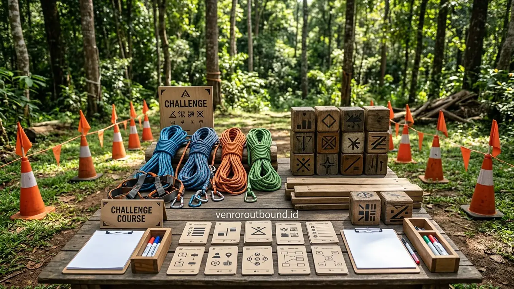

Apa Itu Onboarding Karyawan Baru dan Mengapa Sangat Krusial?
Jawaban singkat: Simulasi outbound dalam program onboarding membantu karyawan baru menyerap budaya kerja dan nilai-nilai inti perusahaan secara alami. Melalui pengalaman permainan langsung, peserta lebih cepat mengenal rekan kerja dan memahami pentingnya eksekusi tim tanpa sekat formalitas kantor yang kaku. Pendekatan ini melengkapi pembekalan administratif dengan pemahaman perilaku kolaboratif yang terukur.
Proses penerimaan talenta baru dalam sebuah organisasi tidak berhenti saat kontrak kerja ditandatangani. Tahap berikutnya yang menentukan produktivitas jangka panjang adalah fase orientasi dan sosialisasi budaya kerja yang dikenal sebagai employee onboarding. Bagi divisi Talent Acquisition serta Human Resources Development (HRD), program onboarding merupakan gerbang pertama yang menjembatani harapan perusahaan dengan kesiapan mental karyawan baru.
Tujuan utama dari program onboarding bukan sekadar menyelesaikan kelengkapan administratif atau membagikan inventaris kerja. Lebih dari itu, onboarding bertujuan mengakselerasi adaptasi karyawan baru agar segera mengenali ritme kerja, memahami ekspektasi performa, menyerap nilai-nilai perusahaan (corporate culture), dan membangun saluran komunikasi yang sehat dengan rekan kerja lintas divisi. Ketika karyawan merasa diterima dan memahami arah tujuan timnya sejak dini, tingkat keterikatan (employee engagement) dan rasa memiliki terhadap organisasi akan tumbuh lebih kokoh.
Mengapa Onboarding Tidak Cukup Hanya dengan Presentasi Satu Arah?
Secara tradisional, agenda orientasi karyawan sering kali diisi oleh rangkaian sesi di dalam ruang rapat atau auditorium ber-AC. Selama berjam-jam, peserta disuguhi puluhan slide presentasi yang memuat sejarah pendiri, visi misi perusahaan, struktur bagan organisasi, serta pasal-pasal kepatuhan internal. Pendekatan presentasi kelas tentu tetap memiliki tempat penting untuk materi regulasi dan kebijakan administratif. Namun, mengandalkan ceramah satu arah untuk menanamkan budaya kerja kerap menghadapi kendala efektivitas:
- Peserta Cenderung Bersikap Pasif: Duduk mendengarkan materi teoritis dalam durasi panjang memicu kejenuhan kognitif (cognitive overload), sehingga daya serap materi menurun secara drastis setelah beberapa jam pertama.
- Interaksi Antarpeserta Sangat Terbatas: Dalam format kelas, komunikasi berlangsung searah dari pemateri ke audiens. Karyawan baru yang duduk bersebelahan jarang memiliki kesempatan untuk saling berdiskusi mendalam atau menguji dinamika kerja sama tim.
- Kesulitan Mengonversi Nilai ke Perilaku Nyata: Kata-kata seperti "sinergi", "inovatif", atau "akuntabel" mudah dihafalkan sebagai teks, namun sulit dipahami bagaimana wujud perilakunya saat menghadapi tenggat waktu kerja atau konflik pendapat.
Melihat keterbatasan tersebut, banyak organisasi progresif kini memadukan pembekalan kelas dengan program team building perusahaan di luar ruangan guna menciptakan simulasi perilaku kerja yang dinamis.

Mengapa Program Onboarding Outdoor Lebih Mengesan Dibanding Presentasi Kelas
Analisis perbandingan objektif antara pembelajaran berbasis pengalaman luar ruangan dan orientasi kelas teoritis.
Konsep Simulasi Budaya Kerja Interaktif di Alam Terbuka
Simulasi budaya kerja interaktif adalah metodologi pembelajaran berbasis pengalaman (experiential learning) yang menempatkan peserta ke dalam skenario permainan terstruktur. Alih-alih mendengarkan ceramah tentang kolaborasi, karyawan baru langsung ditempatkan dalam situasi yang menuntut koordinasi cepat, pembagian tugas yang adil, serta keterbukaan dalam menyampaikan ide.
Melalui media aktivitas luar ruangan, sekat-sekat kecanggungan sosial dapat mencair dengan cepat. Saat peserta bersama-sama mencari solusi atas rintangan fisik atau teka-teki logika di lapangan hijau yang luas, status asal kampus, latar belakang divisi, maupun senioritas tidak lagi menjadi penghalang. Seluruh anggota tim dihadapkan pada tujuan bersama yang menuntut partisipasi aktif setiap individu.
Bagaimana Core Values Perusahaan Dimasukkan ke Dalam Permainan?
Salah satu keunggulan utama dari onboarding outbound karyawan adalah fleksibilitasnya dalam menerjemahkan nilai inti perusahaan menjadi metafora tindakan yang nyata. Berikut adalah contoh bagaimana nilai-nilai organisasi dapat diintegrasikan ke dalam desain simulasi:
1. Core Value: Collaboration (Kolaborasi)
Nilai ini diwujudkan melalui permainan yang membutuhkan pembagian peran saling bergantung. Sebagai contoh, simulasi Giant Puzzle Assembly menuntut anggota tim memegang potongan yang berbeda dan tidak dapat menyelesaikan struktur tanpa sinkronisasi komunikasi yang presisi.
Pelajaran: Keberhasilan divisi bukanlah hasil kerja solo heroik, melainkan integrasi harmonis dari kontribusi seluruh anggota tim.
2. Core Value: Integrity (Integritas)
Dalam simulasi navigasi berpenutup mata (Blind Trail Challenge), peserta yang menjadi penunjuk arah dilarang menyentuh peserta lain dan wajib memberikan instruksi yang jujur tanpa memanipulasi rambu batas arena permainan.
Pelajaran: Kepercayaan rekan kerja dibangun di atas kejujuran perkataan dan kepatuhan terhadap aturan etika operasional.
3. Core Value: Customer Focus (Fokus Pelanggan)
Skenario permainan dirancang dengan menetapkan satu kelompok sebagai penerima manfaat layanan (*internal client*). Kelompok eksekutor harus mendengarkan spesifikasi kebutuhan secara saksama sebelum merancang solusi rintangan.
Pelajaran: Solusi kerja harus selalu berorientasi pada pemenuhan kebutuhan nyata pengguna akhir tanpa mengabaikan standar mutu.
4. Core Value: Accountability (Akuntabilitas)
Setiap peserta memegang kendali atas satu tali penyeimbang beban dalam simulasi Tower of Hanoi. Jika satu orang melepaskan pegangan atau lalai memperhatikan ritme regu, menara akan runtuh.
Pelajaran: Setiap jabatan memiliki bobot tanggung jawab tersendiri; kelalaian individu berdampak langsung pada stabilitas organisasi.

Delapan Tahapan Struktur Program Onboarding Outbound
Agar kegiatan outbound tidak bergeser menjadi sekadar rekreasi tanpa arah, rangkaian acara perlu disusun secara sistematis mengacu pada siklus pembelajaran orang dewasa. Berikut adalah 8 tahapan alur kegiatan yang direkomendasikan:
| Tahapan | Nama Aktivitas | Fokus & Tujuan Pembelajaran |
|---|---|---|
| Tahap 1 | Opening & Executive Briefing | Penyampaian tujuan kegiatan oleh pimpinan HRD dan penegasan komitmen orientasi budaya. |
| Tahap 2 | Ice Breaking & De-Inhibition | Permainan interaktif ringan untuk meruntuhkan rasa malu, canggung, dan sekat formalitas. |
| Tahap 3 | Team Grouping & Identity Building | Pembentukan kelompok heterogen lintas latar belakang, penyusunan nama regu, yel-yel, dan nilai komitmen. |
| Tahap 4 | Low-Impact Team Challenge | Simulasi pemecahan masalah dasar yang menuntut komunikasi aktif dan pembagian tugas awal. |
| Tahap 5 | Corporate Culture Simulation | Tantangan kolaboratif bertingkat yang menyimulasikan penerapan langsung core values organisasi. |
| Tahap 6 | Guided Debrief & Reflection | Fasilitator memandu sesi tanya jawab perenungan: apa yang terjadi di lapangan dan apa maknanya bagi kerja nyata. |
| Tahap 7 | Connecting Activity with Workplace | Peserta merumuskan keterkaitan simulasi dengan tantangan operasional divisi dan ekspektasi kerja harian. |
| Tahap 8 | Closing & Cultural Commitment | Penandatanganan banner komitmen bersama angkatan baru dan seremoni penyambutan resmi ke dalam keluarga besar perusahaan. |

Paket Outbound Onboarding & Corporate Culture Alignment Terpercaya
Ulasan paket terstruktur untuk menyelaraskan budaya kerja angkatan karyawan baru di lokasi alam terbuka yang representatif.
Peran Kunci HRD dan Talent Acquisition dalam Desain Program
Keberhasilan program orientasi berbasis outbound sangat ditentukan oleh kolaborasi erat antara tim HR internal dengan fasilitator eksternal. Divisi Talent Acquisition dan HRD memegang peran vital di beberapa aspek strategis:
- Menentukan Objektif Perilaku (Behavioral Objectives): Menetapkan secara spesifik perilaku apa yang ingin dilihat dari angkatan karyawan baru—apakah kelincahan berkomunikasi, inisiatif memimpin, atau ketelitian mematuhi SOP.
- Memberikan Konteks Budaya Kerja yang Autentik: Membagikan studi kasus atau istilah internal organisasi kepada tim instruktur agar narasi permainan terasa relevan dengan atmosfer kerja sehari-hari.
- Melakukan Observasi Potensi dan Karakter: Memanfaatkan momentum permainan untuk mengamati gaya kepemimpinan alami, respons terhadap tekanan masalah, serta daya empati sosial masing-masing talenta baru.
- Menjaga Kesinambungan Pascakegiatan: Mengintegrasikan wawasan yang diperoleh dari sesi outbound ke dalam rencana pendampingan (mentoring) dan evaluasi masa percobaan kerja (probation review).
Mengapa Sesi Reflection dan Debrief Menjadi Penentu Keberhasilan?
Salah satu kekeliruan umum dalam penyelenggaraan outbound adalah menganggap bahwa keseruan bermain di lapangan secara otomatis menghasilkan pemahaman budaya. Kenyataannya, permainan hanyalah pemicu (catalyst). Pembelajaran yang sesungguhnya terjadi pada saat sesi reflection and debrief.
Dalam sesi debrief yang dipandu oleh fasilitator berpengalaman, peserta diajak untuk melangkah mundur dan membedah dinamika yang baru saja terjadi. Fasilitator melontarkan pertanyaan reflektif seperti: "Apa yang menyebabkan strategi tim Anda sempat terhambat di awal?", "Bagaimana respons Anda saat rekan setim melakukan kesalahan?", dan "Bagaimana situasi permainan tadi menyerupai tantangan koordinasi lintas divisi di kantor kita?".
Melalui proses perenungan ini, karyawan baru dapat menyadari konsekuensi dari setiap keputusan yang diambil. Mereka tidak hanya belajar dari keberhasilan, melainkan juga memetik pelajaran berharga dari kegagalan simulasi dalam lingkungan belajar yang aman tanpa sanksi formal.

Peran Karakter & Soft Skills dalam Kesiapan Kerja Generasi Muda
Mengapa penguasaan keterampilan interpersonal dan daya adaptasi karakter menjadi penentu utama kesuksesan karier di era modern.
Indikator Keberhasilan Kualitatif Onboarding Karyawan Baru
Mengukur efektivitas program onboarding luar ruangan sebaiknya tidak didasarkan pada klaim persentase retensi yang tidak dapat diverifikasi. Tim manajemen dan HR disarankan menggunakan indikator evaluasi kualitatif yang dapat diobservasi secara berkala:
- Kejelasan Pemahaman Nilai Inti: Karyawan baru mampu menjelaskan makna core values perusahaan menggunakan kata-kata mereka sendiri dan memberikan contoh penerapannya dalam tugas harian.
- Pencairan Hambatan Komunikasi Antarrekan: Berkurangnya rasa canggung saat meminta bantuan rekan kerja dari divisi yang berbeda selama minggu-minggu pertama penugasan.
- Adaptasi Perilaku Tim yang Responsif: Talenta baru menunjukkan inisiatif untuk berkolaborasi, menghargai perbedaan pandangan, serta mematuhi norma etika kerja yang telah disimulasikan.
- Umpan Balik Positif dalam Evaluasi Orientasi: Skor kepuasan yang tinggi pada survei pascaonboarding terkait kejelasan orientasi budaya dan kehangatan sambutan lingkungan kerja.
Optimalkan Program Onboarding Karyawan Baru Bersama Kami
Rancang simulasi budaya kerja yang relevan dan menyenangkan bagi angkatan talenta baru perusahaan Anda. Hubungi admin Vendor Outbound di +62 82211221909 untuk konsultasi konsep dan penawaran lokasi terbaik.
Hubungi Kami via WhatsAppKesimpulan
Mempercepat proses onboarding karyawan baru melalui simulasi budaya kerja interaktif bukan sekadar menghadirkan suasana rekreasi di luar kantor. Ini adalah pendekatan strategis dalam membangun fondasi kerja sama tim sejak langkah pertama mereka bergabung. Dengan menerjemahkan core values menjadi tindakan nyata, meruntuhkan sekat formalitas melalui aktivitas kolaboratif, serta mengunci pemahaman melalui sesi debrief yang mendalam, perusahaan dapat membantu talenta terbaiknya beradaptasi lebih cepat, bekerja lebih solid, dan memberikan kontribusi produktif bagi pertumbuhan organisasi.
Pertanyaan Sering Diajukan (FAQ)

Arby Ardiansyah
Praktisi pengembangan SDM dan perancang program experiential learning dengan pengalaman memfasilitasi berbagai kegiatan outbound korporat, team building, dan orientasi budaya kerja karyawan baru di seluruh Jawa Timur.